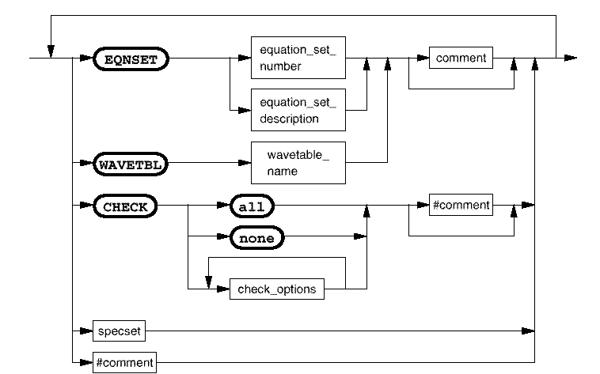

Timing Specifications - Reference
This component is used to define timing specs and to assign setup, maximum and minimum values to them.

Each spec set contains one equation set reference, one wavetable reference, and a list of spec value assignments. When defining a spec set therefore, as well as specifying the spec value assignments, an equation set and a wavetable reference must also be specified. These do not need to be specified for each specset since the default equation set and waveset references are the last ones specified. An equation set and a wavetable must be specified for the first spec set.
Spec sets are referenced by combining specset number with the referenced equation set number or name. This reference must be unique. If it is not, an error is reported.